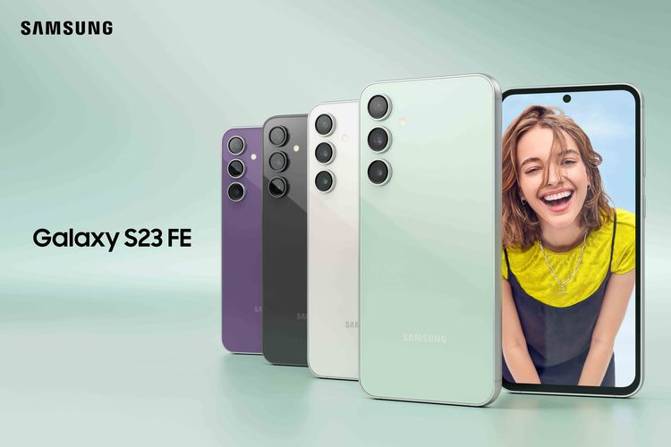

Bocoran Detail Spesifikasi Charging Samsung Galaxy S24 FE
Meskipun menjadi opsi lebih terjangkau dalam Galaxy S24 Series, Galaxy S24 FE memiliki kecepatan pengisian daya yang sama dengan Galaxy S23 FE, yaitu 25W. Namun, perbedaan terletak pada fitur wireless charging, di mana Galaxy S24 FE hanya mendukung 9W, berbeda dari 15W pada generasi sebelumnya.

Selain itu, kapasitas baterai Galaxy S24 FE mengalami peningkatan tipis dari 4.500mAh menjadi 4.565mAh. Meskipun lebih besar daripada model Galaxy S24 reguler yang hanya memiliki kapasitas baterai 4.000mAh, tentu saja daya tahannya masih harus diuji lebih lanjut.
Samsung juga dikabarkan akan menggunakan chipset Exynos 2400e pada Galaxy S24 FE, yang merupakan versi downclock dari Exynos 2400 yang digunakan pada Galaxy S24 Series. Ini merupakan peningkatan dari chipset Exynos 2200 yang digunakan pada Galaxy S23 FE tahun sebelumnya.
Layar Galaxy S24 FE diperkirakan sedikit lebih besar, dengan ukuran 6,7 inci dan panel AMOLED beresolusi Full HD+ serta refresh rate 120Hz. Kecerahan puncaknya mencapai 1.900 nits, yang akan memberikan pengalaman visual yang baik. Di sektor fotografi, Galaxy S24 FE dilengkapi dengan empat kamera belakang: kamera utama 50MP, ultrawide 12MP, telefoto 8MP dengan zoom optik 3x, dan kamera selfie 10MP.
Meskipun desain Galaxy S24 FE hampir tidak mengalami perubahan, perangkat ini tetap hadir dengan bodi serba datar dan modul kamera minimalis pada panel belakang. Dengan jadwal rilis yang semakin dekat, kita mungkin tidak perlu menunggu lama lagi untuk mendengar kabar resmi dari Samsung mengenai Galaxy S24 FE.